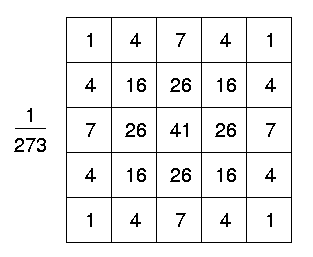

These are the algorithms that are used in Computer Vision-Based Door Detection for Accessibility of Unfamiliar Environments to Blind Persons [Ann 1].
Ideally, the model consists of four corners (90 degrees each) and four lines (the doorframe). However, since the door may be occluded or the door may not be exactly in front of the camera, the model used in this paper just includes four corners and four lines.
Now, the assumptions:
This model along with the presented assumptions for the algorithm allows the door detection to be robust to variations in color, texture, occlusion, and whether the door is opened or closed.
Gaussian Smoothing, also known as Gaussian blur, is used to reduce image noise and it eliminates the unnecessary corners for door detection.
[Img 4] A discrete version of a filter you can apply to every pixel to enact Gaussian Smoothing.
Developed in 1986, the Canny Edge Detector is used to obtain the edges in the image and is known as the optimal detector by many. The algorithm consists of the following steps [Ann 8]:
*More information can be found on the OpenCV implementation of the Canny Edge Detector can be found here.
The corner extraction method was developed from [Ann 10] by calculating global and local curvature properties from the edge map produced by Step 2. Endpoints of contours also count as corners, which gives us corners even if they are occluded.
* See Algorithms Part II for the rest of the algorithms, here.